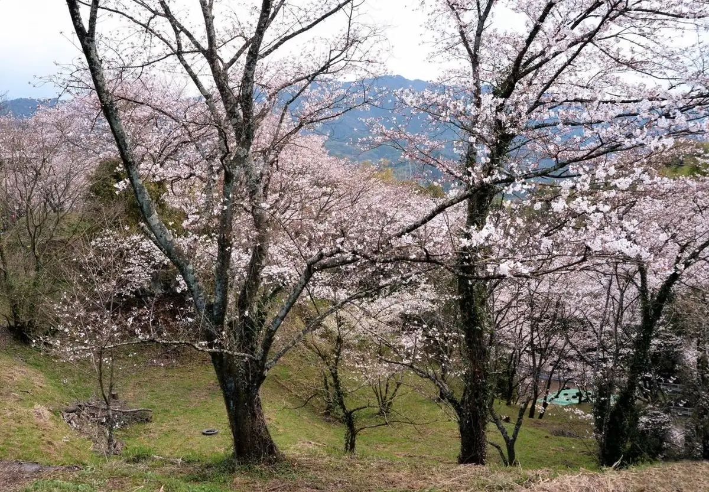
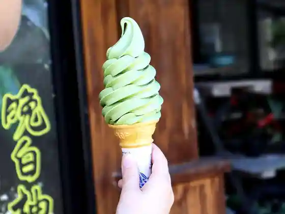
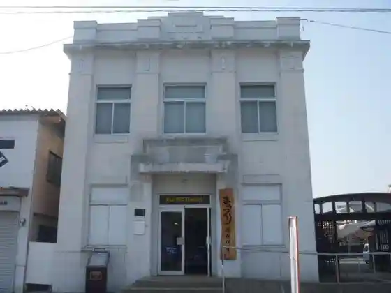
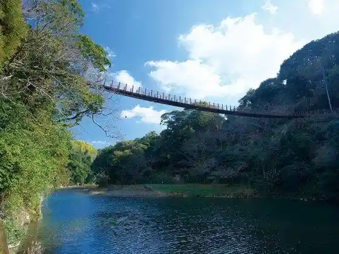
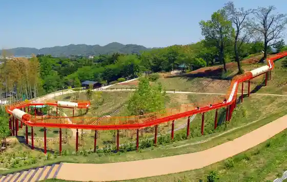

Japan / Kumamoto / Hikawa
Hikawa, Kumamoto
Hikawa · Kumamoto
Hikawa
Highlighted on the Kumamoto map.

Sights
Roadside Station Ryuhoku (Ryuhoku Town Bussan Kan Bisutoroguriin)
Hikawa, Kumamoto · 0965-53-5388 · Official / source link

Sakuragaoka Park
Hikawa, Kumamoto · 0965-62-2315 · Official / source link
Hikawa Machizukuri Joho Ginko
Hikawa, Kumamoto · 0965-62-1600 · Official / source link

Tategami Kyo Satochi Park
Hikawa, Kumamoto · 0965-62-1543 · Official / source link

Ryuhoku Park
Hikawa, Kumamoto · 0965-62-2999 · Official / source link

Ono Kaizuka
Hikawa, Kumamoto · 0965-52-5860 · Official / source link
Notsu Kofun Gun
Hikawa, Kumamoto · 0965-52-5860 · Official / source link
Tategami Kyo
Hikawa, Kumamoto · 0965-62-1543 · Official / source link
HOTEL AZ Kumamoto Yatsushiro Miyahara Mise
Hikawa, Kumamoto · 0965-62-1300 · Official / source link
Ono Kutsu Burial Mound
Hikawa, Kumamoto · Official / source link